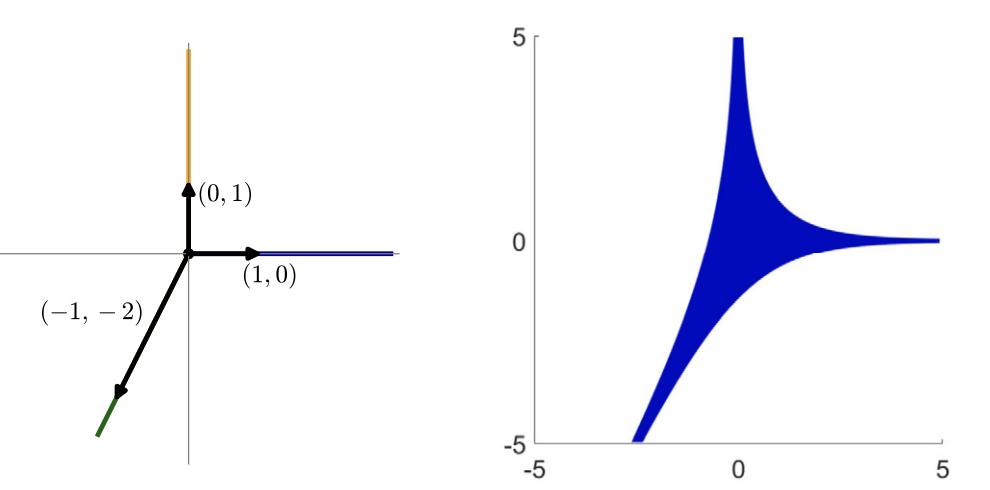
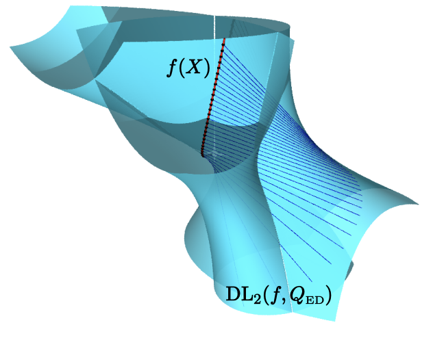
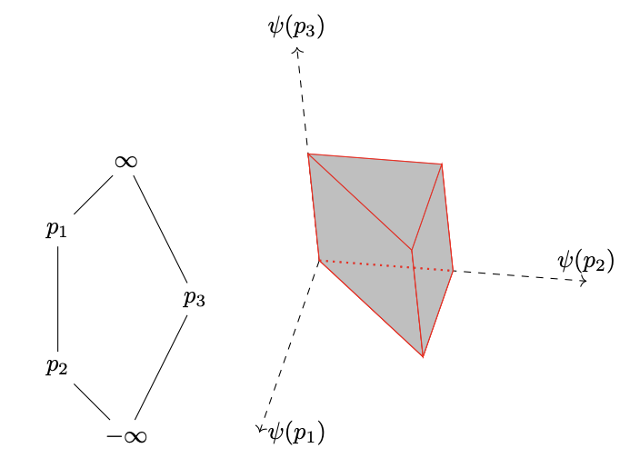
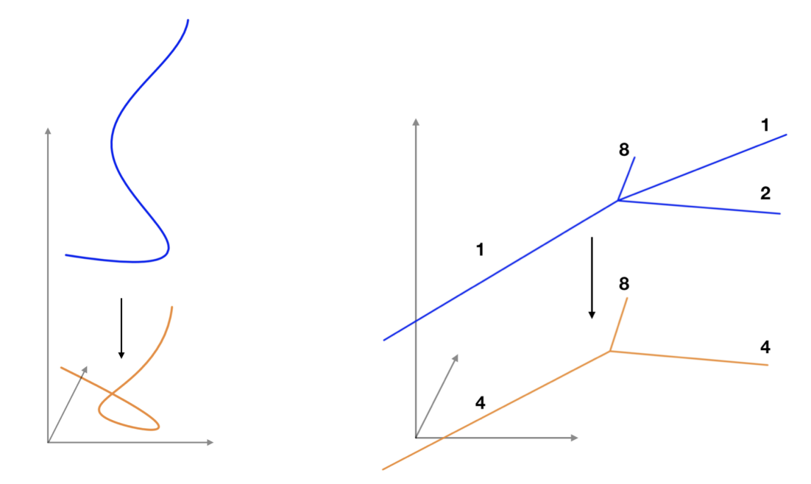
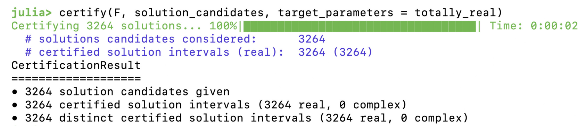
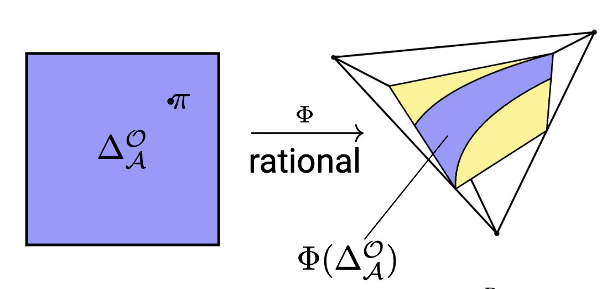
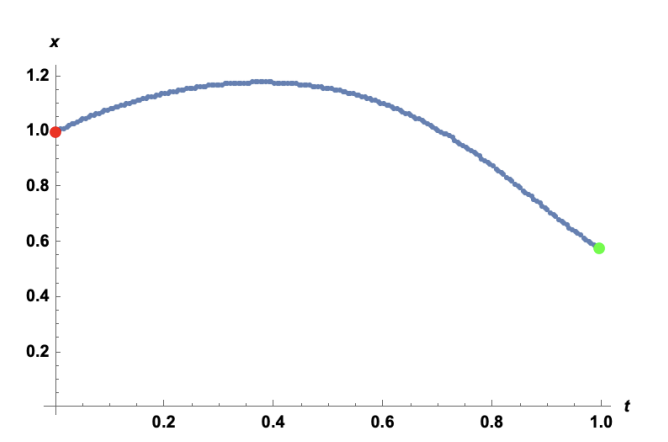
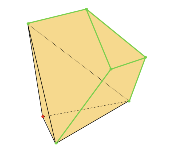
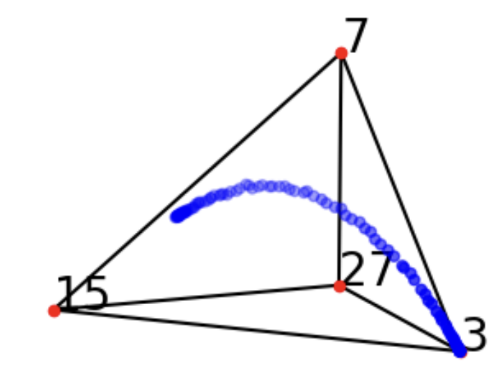

Toggle navigation
Home
Research
CV
Thesis
Kemal Rose
kemalr[at]kth[dot]se
Google Scholar
LinkedIn
Brinellvägen 8, Stockholm

Computing positive tropical varieties and lower bounds on the number of positive roots
with Máté L. Telek
Journal of Symbolic Computation
, vol. 132 (2026)

Osculating Geometry and Higher-Order Distance Loci
with Sandra Di Rocco, Luca Sodomaco
arXiv:2507.02823 (2025)

Toric non-Gorenstein loci
To appear in "Varieties, polyhedra, computation", EMS Series of Congress Reports (2025)

Tropical implicitization revisited
with Bernd Sturmfels, Simon Telen
in
The Computer Algebra System OSCAR
, Algorithms and Computation in Mathematics, Springer vol. 32, pp. 429–450 (2025)
The polyhedral type of a polynomial map on the plane
with Boulos el Hilany
arXiv:2402.08993 (2024)

Certifying zeros of polynomial systems using interval arithmetic
with Paul Breiding, Sascha Timme
ACM Trans. Math. Software
49, no. 1, Art. 11 (2023)

Algebraic optimization of sequential decision problems
with Mareike Dressler, Guido Montufar, Johannes Müller, Marina Garotte
Journal of Symbolic Computation
, vol. 121 (2023)

A polyhedral homotopy algorithm for computing critical points of polynomial programs
with Julia Lindberg, Leonid Monin
arXiv:2302.04117 (2023)

The algebraic degree of sparse polynomial optimization
with Julia Lindberg, Leonid Monin
arXiv:2308.07765 (2023)

Lines on 𝑝-adic and real cubic surfaces
with Rida Ait El Manssour, Yassine El Maazouz, Enis Kaya
Abh. Math. Semin. Univ. Hambg.
, vol. 93, pp. 149–162 (2023)